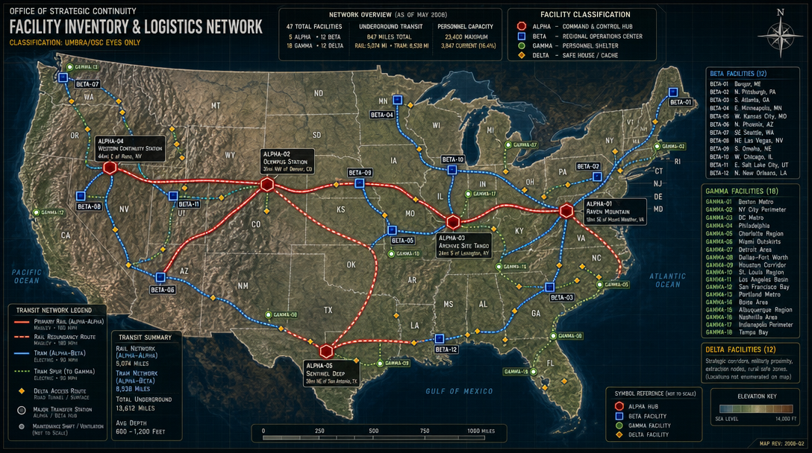

01 — EXECUTIVE SUMMARY
FACILITIES
HUB INSTALLATIONS
CAPACITY
STAFFING LEVEL
UTILIZATION
COST (2001–2008)
As of May 2008, the Office of Strategic Continuity maintains 47 operational facilities across the continental United States, with an integrated underground transportation network connecting 12 primary hub installations. Total current personnel capacity across all facilities: 23,400 individuals. Current staffing level: 3,847 personnel (16.4% of maximum capacity).
Facility construction initiated January 2001 under Executive Order 13201. All construction performed using compartmentalized defense contractors under Title 50 operational security protocols. Individual contractors possess no comprehensive knowledge of network scope or purpose.
02 — FACILITY CLASSIFICATION SYSTEM
ALPHA-CLASS — Command & Control Hubs
- Deep underground installations — 800 to 2,400 ft depth
- Full life support and independent power generation
- Rail network terminals & inter-hub connections
- Government reconstitution capability
BETA-CLASS — Regional Operations Centers
- Medium-depth installations — 400 to 800 ft depth
- Regional coordination and intelligence fusion
- Tram connections to local Alpha facility
- Limited long-term sustainability
GAMMA-CLASS — Personnel Shelters
- Shallow to medium depth — 150 to 500 ft
- Personnel preservation focus — essential staff only
- Basic life support: 90 to 180 day operational window
- No rail connections
DELTA-CLASS — Safe Houses & Caches
- Surface or minimal depth installations
- Emergency staging and equipment storage
- 72-hour sustainability maximum
- No integrated transit connections
03 — FACILITY INVENTORY BY CLASS
ALPHA-CLASS FACILITIES — 5 Installations
BETA-CLASS FACILITIES — 12 Installations
| Designation | Location | Cover Identity | Capacity | Current Staff | Primary Function |
|---|---|---|---|---|---|
| BETA-01 | 15mi W of Bangor, ME | EPA Monitoring Station | 850 | 64 | Northeast regional ops |
| BETA-02 | 27mi N of Pittsburgh, PA | Natural Gas Reserve Facility | 920 | 118 | Mid-Atlantic industrial continuity |
| BETA-03 | 19mi S of Atlanta, GA | CDC Secondary Research Complex | 1,100 | 147 | Southeast regional ops / biomedical |
| BETA-04 | 33mi E of Minneapolis, MN | Agricultural Research Station | 780 | 52 | Northern Plains monitoring |
| BETA-05 | 41mi W of Kansas City, MO | FAA Regional Training Center | 890 | 93 | Central logistics hub |
| BETA-06 | 22mi N of Phoenix, AZ | DOE Solar Research Facility | 740 | 81 | Southwest regional ops |
| BETA-07 | 36mi SE of Seattle, WA | USGS Seismology Center | 810 | 67 | Pacific Northwest ops / tech sector continuity |
| BETA-08 | 28mi NE of Las Vegas, NV | Nuclear Test Site Support | 950 | 103 | Nevada operations / weapons oversight |
| BETA-09 | 17mi S of Omaha, NE | STRATCOM Auxiliary Facility | 1,020 | 129 | Central military coordination |
| BETA-10 | 44mi W of Chicago, IL | DHS Regional Response Center | 1,150 | 167 | Great Lakes regional command |
| BETA-11 | 31mi E of Salt Lake City, UT | BLM Resource Management | 680 | 71 | Mountain West ops |
| BETA-12 | 52mi N of New Orleans, LA | FEMA Hurricane Continuity Site | 890 | 114 | Gulf Coast operations |
| BETA-CLASS TOTALS | 10,780 | 1,206 (11.2%) | — | ||
GAMMA-CLASS FACILITIES — 18 Installations
Personnel preservation sites distributed across key population centers. Intended for "essential personnel" extraction and short-term sheltering during acute crisis scenarios.
| Designation | Location Area | Capacity | Current Staff | Notes |
|---|---|---|---|---|
| GAMMA-01 | Greater Boston Metro | 420 | 18 | Academic/scientific personnel focus |
| GAMMA-02 | New York City Perimeter | 580 | 31 | Financial sector continuity |
| GAMMA-03 | DC Metro Belt | 650 | 47 | Political/bureaucratic personnel |
| GAMMA-04 | Philadelphia Suburbs | 380 | 14 | Northeast industrial base |
| GAMMA-05 | Charlotte Region | 340 | 19 | Banking infrastructure |
| GAMMA-06 | Miami Outskirts | 290 | 11 | Latin America operations personnel |
| GAMMA-07 | Detroit Area | 310 | 23 | Manufacturing continuity |
| GAMMA-08 | Dallas-Fort Worth | 490 | 38 | Energy sector personnel |
| GAMMA-09 | Houston Corridor | 520 | 42 | Oil/gas expertise preservation |
| GAMMA-10 | St. Louis Region | 270 | 9 | Mississippi logistics |
| GAMMA-11 | Los Angeles Basin | 610 | 49 | West Coast tech/media |
| GAMMA-12 | San Francisco Bay | 580 | 44 | Silicon Valley preservation |
| GAMMA-13 | Portland Metro | 240 | 8 | Pacific resource corridor |
| GAMMA-14 | Boise Area | 190 | 7 | Northwest agricultural |
| GAMMA-15 | Albuquerque Region | 220 | 12 | Nuclear weapons personnel |
| GAMMA-16 | Nashville Area | 280 | 13 | Mid-South logistics |
| GAMMA-17 | Indianapolis Perimeter | 260 | 11 | Heartland manufacturing |
| GAMMA-18 | Tampa Bay | 310 | 17 | Military retiree concentration |
| GAMMA-CLASS TOTALS | 6,940 | 413 (6.0%) | — | |
DELTA-CLASS FACILITIES — 12 Installations
Surface or near-surface safe houses and equipment caches. Not enumerated in detail for operational security. Distribution focused on strategic interstate corridors, proximity to major military installations, extraction route nodes, and rural "gray areas" with low population density.
04 — UNDERGROUND TRANSIT NETWORK
The OSC operates 847 miles of underground rail and tram tunnels connecting primary facilities. Construction performed 2002–2007 using deep tunnel boring machines (TBMs) under classification as "utility infrastructure" and "geological survey operations."
Technology Base
Primary Rail Network — ALPHA-to-ALPHA Connections

Rail Segments
| # | Route | Distance | Travel Time | Completed |
|---|---|---|---|---|
| 01 | ALPHA-01 ↔ ALPHA-03 Virginia — Kentucky | 387 mi | 2.1 hrs | Dec 2004 |
| 02 | ALPHA-01 ↔ ALPHA-02 Virginia — Colorado | 1,544 mi | 8.6 hrs | Nov 2006 |
| 03 | ALPHA-02 ↔ ALPHA-04 Colorado — Nevada | 748 mi | 4.2 hrs | Aug 2006 |
| 04 | ALPHA-02 ↔ ALPHA-05 Colorado — Texas | 891 mi | 5.0 hrs | Mar 2007 |
| 05 | ALPHA-03 ↔ ALPHA-05 Kentucky — Texas | 1,106 mi | 6.1 hrs | Sep 2006 |
| 06 | ALPHA-01 ↔ ALPHA-05 Virginia — Texas (redundancy) | 1,398 mi | 7.8 hrs | Feb 2007 |
Regional Tram Networks — ALPHA-to-BETA Connections
Eastern Network (ALPHA-01 Hub)
Southern Network (ALPHA-05 Hub)
Mountain/Western Network (ALPHA-02 & ALPHA-04 Hub)
Central Network (ALPHA-03 Hub)
05 — PERSONNEL STRUCTURE & RATIOS
Core Council — 11 Individuals
Facility Command Staff — 247 Individuals
Specialized Personnel — 1,891 Individuals
Essential Support — 1,698 Individuals
Standard Facility Personnel Ratios
Based on fully-staffed ALPHA-class facility (ALPHA-01 model — 4,500 capacity)
| Function | % | Count (4,500) | Distribution |
|---|---|---|---|
| Command & Administration | 8% | 360 | |
| Intelligence/Analysis | 15% | 675 | |
| Security Forces | 22% | 990 | |
| Military Operations | 12% | 540 | |
| Technical/Engineering | 14% | 630 | |
| Medical | 6% | 270 | |
| Communications | 5% | 225 | |
| Logistics & Supply | 9% | 405 | |
| Food Service | 4% | 180 | |
| Maintenance | 5% | 225 |
Note: Current skeleton crews maintain approximately 7:1 ratio of support-to-command staff to preserve institutional knowledge and operational continuity during low-manning periods.
06 — RECRUITMENT & EXPANSION TIMELINE
- Core Council formation
- Initial facility identification & construction commences
- Personnel recruitment: 347 individuals
- Focus: Command structure and critical facility staff
- Primary rail network construction
- ALPHA facilities brought to completion
- Personnel recruitment: 1,823 individuals (cumulative: 2,170)
- Focus: Facility completion and security force establishment
- Tram network completion
- BETA/GAMMA facilities operational
- Personnel recruitment: 1,677 individuals (cumulative: 3,847)
- Focus: Intelligence apparatus and specialized technical staff
- Target staffing: 40% of maximum capacity — 9,360 personnel
- Focus: Full operational capability and recruitment acceleration
- Target staffing: 75% of maximum capacity — 17,550 personnel
- Focus: Strategic depth and full redundancy across all facilities
07 — OPERATIONAL SECURITY PROTOCOLS
Construction Security
Personnel Security
Background Investigation: Enhanced SSBI with specialized OSC supplement. Focus areas:
- Multi-generational family citizenship verification
- Financial independence from foreign-connected entities
- Psychological assessment for ideological reliability
- Social network mapping
08 — LOGISTICS & SUSTAINABILITY
Strategic reserves as of May 2008. Quantities expressed at full 23,400-capacity scale unless otherwise noted.
Food Stocks
- MRE/Long-term storage: 47 million meals — sufficient for 23,400 personnel for 5.5 years
- Agricultural seed vault: 1.2 million samples (ALPHA-03)
- Water purification: 2.4 million gallons/day network-wide
Medical
- Pharmaceutical stockpiles: 8-year supply at capacity
- Surgical facilities: 47 operating rooms network-wide
- Blood/plasma storage: 180,000 units
- Genetic material vault: 125,000 samples (ALPHA-03)
Energy
- Nuclear reactors: 8 installations — 5 ALPHA sites, 3 BETA sites
- Diesel generator backup: 180-day runtime all facilities
- Renewable integration: Solar/geothermal at surface facilities
Armaments
- Small arms: 68,000 weapons — full capacity + 400% reserve
- Ammunition: 127 million rounds
- Heavy weapon systems: [REDACTED — TIER 1 ONLY]
09 — BUDGET EXPENDITURE (2001–2008)
| Category | Amount | % of Total | Distribution |
|---|---|---|---|
| Facility Construction | $142B | 49.5% | |
| Transit Network | $89B | 31.0% | |
| Equipment & Systems | $34B | 11.8% | |
| Personnel Costs | $14B | 4.9% | |
| Strategic Reserves | $8B | 2.8% |
Funding Sources
Audit Exposure Risk: MINIMAL. Network cost distribution and classification protocols prevent single-point discovery. Congressional oversight committees possess no awareness of program existence.
10 — FUTURE EXPANSION PRIORITIES
- Complete 6 additional GAMMA-class facilities — focus: West Coast density
- Establish ALPHA-06 — Alaska strategic reserve facility
- Expand BETA-03 biomedical research capacity
- Integrate satellite communication redundancy
- Accelerate Tier 3 personnel recruitment — target: 800 per year
- Full network staffing to 75% capacity
- Establish continuity protocols for Supreme Court and Congressional leadership
- Complete cultural/technological archive expansion — ALPHA-03
- Integrate advanced AI-driven threat analysis systems
- Prepare primary governance transition protocols
11 — THREAT ASSESSMENT & CONTINGENCIES
External Threats
Internal Threats
12 — CLASSIFICATION CONTROL
This document contains information affecting the national security of the United States within the meaning of the Espionage Act, Title 18 U.S.C., Sections 793, 794, and 798. Unauthorized disclosure is subject to criminal penalties including life imprisonment.
"Continuity is not survival. Continuity is purpose sustained beyond crisis. This infrastructure exists not to shelter us from the end, but to ensure the Republic emerges whole from whatever that end may be."